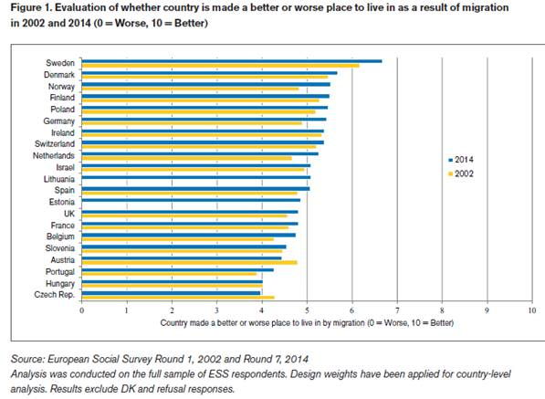
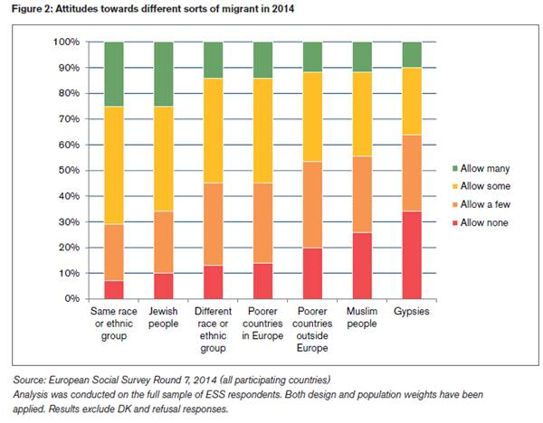
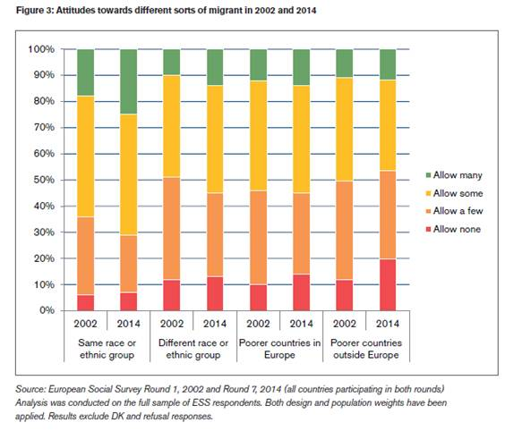

收录于合集
 文献来源： Attitudes towards Immigration and their
Antecedents: Topline Results from Round 7 of the European Social Survey.
文献来源： Attitudes towards Immigration and their
Antecedents: Topline Results from Round 7 of the European Social Survey.
欧洲社会调查官网：http://www.europeansocialsurvey.org/
**第一作者 ：**Anthony Heath，英国社会科学院院士，大英帝国勋章获得者，牛津大学社会学教授，研究方向包括阶级与投票、社会变迁、族群问题等。个人介绍见：https://www.sociology.ox.ac.uk/documents/people/cv/HeathA_CV.pdf
** 编者按：**
长期以来，移民问题困扰着欧洲大陆。随着近年来经济、政治危机的加剧，移民问题一再成为政党竞争和舆论冲突的核心议题。那么，研究者应该如何界定和测量移民问题，调查研究的结果又是否和直观印象相符呢？在此，政文观止特选译欧洲社会调查报告的部分章节，以期给读者一些微小的启示。
**
**
拒斥还是接纳？
随着移民的不断涌入，福利消耗、治安紊乱、工作竞争等不利因素逐一显现。因此，研究者普遍相信，欧洲公众对于移民的态度是不断恶化的。然而，通过对欧洲社会调查首末两轮的数据对比，作者发现事实完全相反。

如图所示，在这12年间，欧洲公众对移民的态度发生了一定程度的好转而非恶化。在2002年，有13个国家的得分均值低于中间值5分。而到了2014年，其中4个国家已经超过5分。值得注意的是，各个国家的相对位置在这十余年间保持了惊人的稳定：北欧国家最为积极，东欧国家最为消极，而西欧国家则居于中间。作者认为，出现这种情况有三种可能的解释：首先，移民带来的各种后果不可避免地加剧了不安，但移民持续涌入也增加了欧洲公众和移民之间的互动与理解，这两种作用很可能彼此抵消；其次，均值的比较隐藏了整体的矛盾，欧洲公众对于移民的态度可能更加两极分化，特别是身处逆境者会极度地抵制移民；最后，这个问题（移民让国家更坏还是更好？）的设定过于模糊，欧洲公众对于不同类型移民的态度可能完全不同。
移民的类型偏好
为了深入揭示欧洲公众对移民的具体态度，作者利用欧洲社会调查问卷中更为细致的问题进行了分析。下图是最新一轮调查中“允许多少移民来我们国家”的堆积条形图。

如图所示，欧洲公众对于不同类型移民的偏好完全不同。对于“同种族”、“犹太人”、“异种族”、“欧洲穷国”、“非欧洲穷国”、“穆斯林”、“吉普赛”这7类移民，欧洲公众的厌恶程度依次递增。
随后，作者再次用首末两轮的数据进行了对比。

如图所示，对于所有类型的移民，欧洲公众的态度都发生了两极分化。其中，“非欧洲穷国”的分化情况最为严重，认为“应当允许很多人来”的比例由11%上升到12%，而认为“不允许来”的比例则由11%上升为20% 。
编后记：
虽然这份报告的数据论证与理论分析严丝合缝，然而作者自己也承认，报告的主要结论与绝大多数既有研究和普遍的经验常识严重相悖。根据这份报告，欧洲公众对于移民的总体态度在稳步好转，极度喜好移民和极度厌恶移民的群体都在增长，而“中间派”则在不断萎缩。根据这一结论，关于移民问题的争论虽然愈演愈烈，但博弈双方依然势均力敌，而不应呈现一边倒的局势。同时，被称为“单一问题（反移民）”的极右翼政党的政治空间应该非常有限，不应该出现集中式和爆发式的崛起。对于这份不符合常识的报告，读者朋友怎么看呢？
**
**
政文观止编辑部
编译不易，